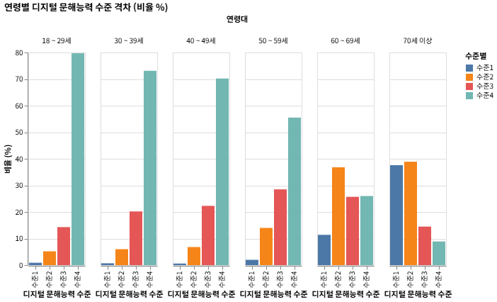

통계청 KOSIS 국가통계포털의 마이크로데이터를 기반으로 연령, 교육 수준, 소득 격차가 만들어내는 우리 사회의 새로운 불평등의 고리를 분석합니다.
성인 디지털 문해력 조사 (2024년 기준)

기본적인 스마트폰 조작 등 최소한의 디지털 활동 불가능
단순 메시지 확인 등 매우 제한적 기능만 수행 가능
인터넷 쇼핑, 기차표 예매 등 일상적인 활용 가능
다양한 미디어, 클라우드, 정보 검색 등 주도적 디지털 활용 가능
인구통계학적 특성(성별, 연령, 소득 수준)을 선택하면 데이터셋 기준 해당 군의 평균 디지털 문해 수준 예상 프로필을 출력합니다.